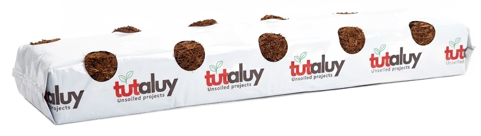
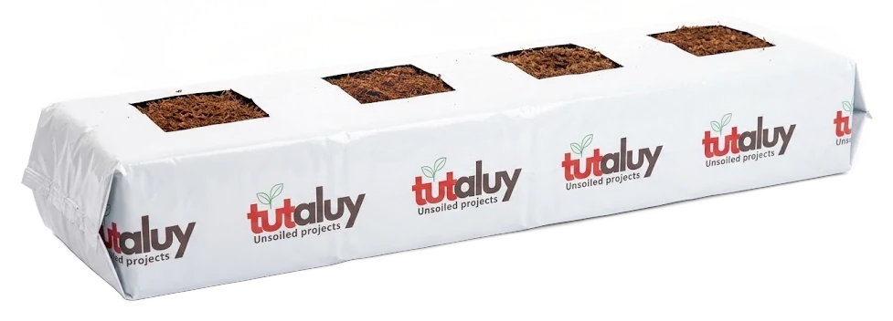
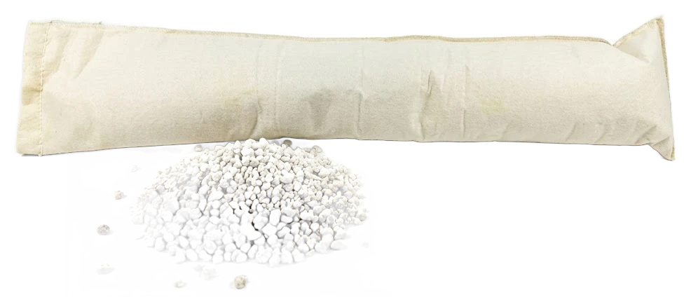

מצעי גידול
שקי קוקוס ופרלייט. שטופים, מאוזנים, ועם EC ידוע לפני השתילה.
קוקוס.
סיבי קוקוס מיושנים ושטופים. מצע אורגני שמחזיק מים ואוויר יחד, ולכן סלחני בהשקיה. הבחירה שלנו לתות ולעגבנייה.
- מאגר מים ואוויר בכל פרק השורשים, גם בין ההשקיות.
- מאוזן מראש בסידן, עם EC ו-pH ידועים לפני השתילה.
- לתות, שק חדש כל עונה: מגיע מחוטא ונקי ממחלות, בלי להעביר כלום מהעונה הקודמת.
- לירקות, עד שלוש שנים באותו שק: המבנה נשמר לעונות ארוכות ולשימוש חוזר.
- אורגני ומתכלה בסוף החיים.

שק קוקוס לתות
מוכן לשתילה, עם פתח לצינור הטפטוף.
11 פתחי שתילה

שק קוקוס לירקות
4 או 5 פתחי שתילה18 / 23 / 27 ליטר
נציגי Dutch Plantin בישראל: שקים מקוקוס מיושן, מיוצרים לפי הזמנה ומגיעים ישירות מהמפעל.
פרלייט.
זכוכית וולקנית תפוחה. מצע מינרלי, סטרילי ואינרטי: מה שנותנים בדשן הוא מה שהשורש מקבל. לירקות בטפטוף תכוף.
- שליטה מלאה בהזנה: בלי קיבול יונים, קל לשטוף ולשנות מתכון.
- אוורור וניקוז גבוהים, השורשים לא נחנקים גם בהשקיות צפופות.
- יציב וסטרילי: לא מתפרק, pH ניטרלי, ניתן לחיטוי ולשימוש חוזר.
- מאגר מים קטן, ולכן דורש השקיה תכופה ובקרה צמודה.

שק פרלייט
בד גאוטכני עבה עם מסנן UV, לירקות.
נפחים שונים
השקיה
ודישון.
במצע מנותק נפח השורשים קטן, וכל טעות בהשקיה מורגשת תוך שעות.
- ראש מערכת עם בקר, משאבות הזרקה, EC ו-pH, מסננים ומדי ספיקה, מכויל בשטח.
- טפטוף מווסת לחץ עם יתדות ומיקרו-צינור לכל שק.
- מדידת נקז בכל בלוק, מחוברת לבקרה ול-NITUR.